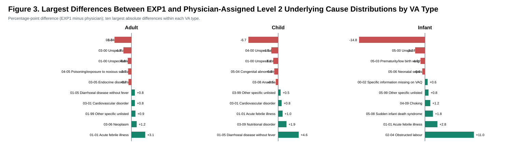
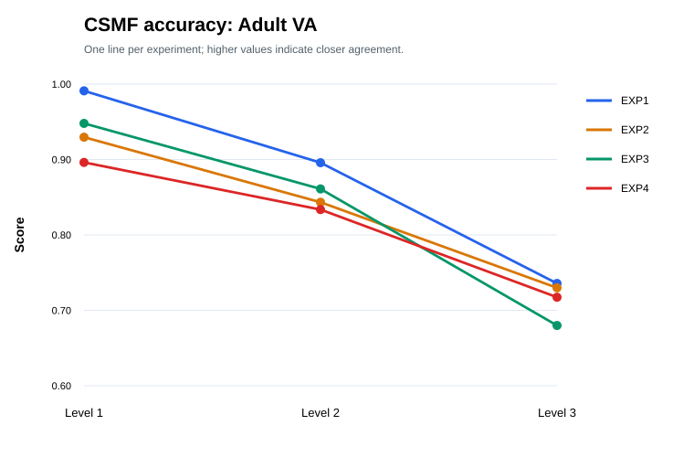
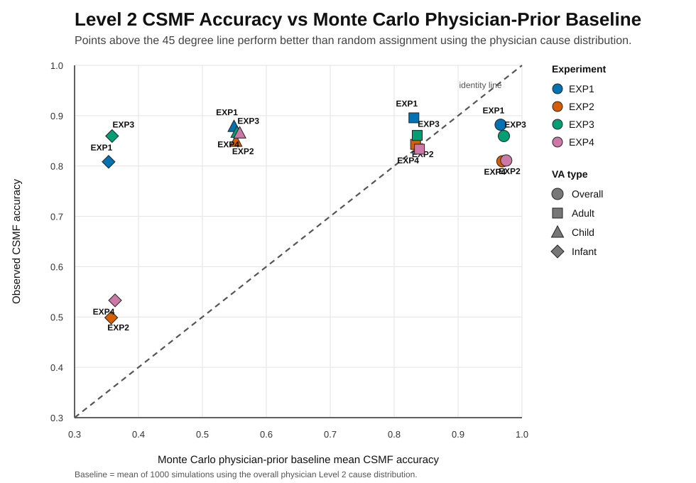

Description
This study was conducted under an INSPIRE 2.0 project, being a collaboration between Amelia Taylor at the Malawi University of Business and Applied Sciences (MUBAS) and Albert Dube and Paul Kambiya at the Malawi Epidemiology and Intervention Research Unit (MEIRU). MEIRU has recorded vital statistics in the Karonga Health and Demographics Surveillance Site (HDSS) since 2002. This research uses the Karonga HDSS data. Verbal Autopsies (VA) data is recorded on semi-structured questionnaires with a close relative of the deceased and includes responses to questionnaire items and a verbal account called a narrative.
We evaluate whether a frontier LLM can reproduce physician cause-of-death assignment process when provided with the complete VA record. We utilise the data and cause of death (CoD) assignment protocol from the Karonga HDSS in Malawi. GPT-assigned causes of death were generated using four different experiential inputs that incorporate the narrative with the questionnaire data. We calculated the exact and flexible agreement between the LLM and physician CoDs for three types of determinations: direct, underlying and contributory, at individual and population level. Agreement was evaluated hierarchically on three coding levels that replicated the process used by physicians.
We show that GPT-5.2 captured clinically relevant causes of death at a high level of consistency and agreement with physicians, particularly at broad and intermediate coding levels. The agreement was better for common than for rare conditions. Our experiments show that the VA narrative contains complementary rather than repeating information from the structured questionnaire and their combined use is essential to CoD determination. Our findings support the use of frontier LLMs as effective tools for verbal autopsy workflows.
This repository serves as a compendium to the main research paper (under publication) and contain only code and selected analysis.
We run four LLM-CoD determination experiments on the four datasets,:
- EXP1 LLM - determinations of CoDs using the full account dataset.
- EXP2 LLM - determinations of CoDs using questionnaire-as-text dataset.
- EXP3 LLM - determinations of CoDs using original-narrative dataset.
- EXP4 LLM - determinations of CoDs using reconstructed-narrative dataset.
LLM Pipeline Code
Selected code used before the agreement analysis: preparing questionnaire variables as text narratives and calling the OpenAI API for verbal autopsy cause-of-death coding. These existing project folders remain unchanged.
Questionnaire-to-text preparation
OpenAI API calls
Notes
- The linked files are in the root preparation/API folders.
- No raw VA records or API keys are included in this analysis compendium.
Selected Manuscript Analysis
The analysis folder has been reduced to the tables and charts included in the manuscript, their reproduction code, and minimal aggregate inputs. Record-level data and intermediate case extracts are excluded.
Tip: table, code, and chart links open in a preview popup. Chart previews include Previous and Next controls.
Tables
Charts and figures
{kind=link}
{kind=link}
Reproduction



AI-assisted coding disclosure: AI-assisted coding using Codex was used to generate code for some of the charts. All AI-generated code was reviewed manually, tested against the data, and verified by the human authors to ensure its correctness.